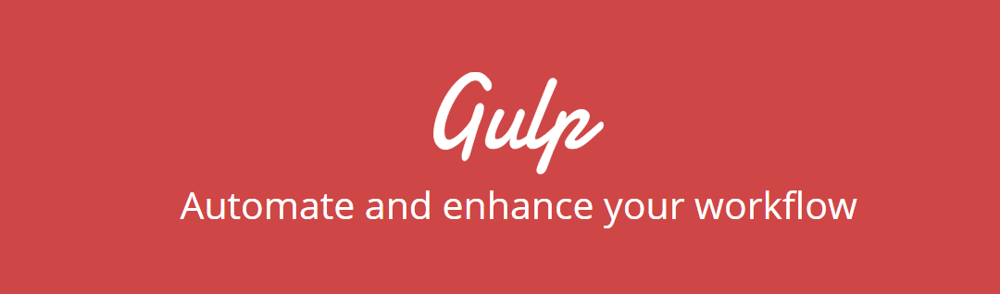

Gulp

Bower управляет версиями установленных пакетов и зависимостями каждого такого пакета. Но как же нам применять эти пакеты в коде эффективно — как для разработки, так и при развертывании проекта?
Тут появляется Gulp. Он запускает задачи, как и его устаревший дальний родственник Make или такие инструменты как Ant, Phing, Rake или новый малыш в этом списке, Grunt.
Gulp против Grunt
Есть два инструмента, которые получили популярность за последний год — Gulp и Grunt.
Grunt был первым, получившим известность и старается предоставить встроенную функциональность чтобы охватить все типовые случаи использования. Он следует подходу на основе конфигурации.
Gulp с другой стороны предлагает очень мало из коробки, вместо этого предпочитая переложить функциональность на множество небольших плагинов с одной функцией. Gulp применяет потоки плагинов для создания комплексного рабочего процесса.
Хотя оба инструмента могут выполнять задачи параллельно, Gulp делает это по умолчанию, пытаясь достичь многократного параллелизма — работает так много задач, насколько это возможно, при этом соблюдаются такие вещи, как зависимость между задачами.
Четыре вещи
Gulp делает из коробки четыре вещи:
- Определяет задачи через gulp.task();
- Отслеживает изменения в файловой системе через gulp.watch();
- Открывает файлы/папки с помощью gulp.src();
- Сохраняет файлы/папки через gulp.dest().
Gulp будет вызывать задачу по умолчанию или любую другую задачу, заданную в командной строке, автоматически.
Всё остальное получается путём последовательного вызова pipe() для gulp.src().
Виртуальная файловая система и потоки
Gulp работает на виртуальной файловой системе, известной как vinylfs. Это означает, что вы можете модифицировать файлы, не касаясь диска, пока не закончите — это позволяет Gulp делать несколько потоков без необходимости сохранять во временные файлы.
Чтобы узнать больше о потоках читайте Stream Handbook.
Установка
Gulp устанавливается идентично Bower, для глобальной установки наберите:
$ npm install -g gulpЧтобы установить локально и сохранить в наш package.json:
$ npm install --save-dev gulpСоздание рабочего процесса
Скажем, мы хотим создать единые CSS и JS-файлы, которые автоматически будут включены в наш шаблон. Мы также должны иметь возможность легко переключиться к оригинальным файлам для отладки.
У нашего рабочего процесса есть две цели. Давайте взглянем на первую — минимизация и объединение:
- найти все используемые файлы;
- минимизировать их;
- объединить файлы в один;
- сохранить файлы;
- заменить ссылки в шаблонах.
Чтобы сделать всё это, мы будем использовать пакеты gulp-uglifyjs, gulp-minify-css и gulp-usemin. Для их установки просто выполните:
$ npm install --save-dev gulp-usemin gulp-uglify gulp-minify-cssПосле этого наш рабочий процесс может выглядеть примерно так:
- gulp.src()
- uglifyjs и minify-css с:
- параметрами concat
- gulp.dest()
- usemin (замена)
Предположим, что наш шаблон в настоящее время находится в /src/templates/layout.tpl. Для начала скопируем его в /src/templates/layout.src.tpl. Этот файл содержит информацию для работы Gulp, генерируя layout.tpl для публикации или разработки, соответственно.
Далее, добавим несколько директив в наш шаблон для работы usemin. Мы сделаем это путём размещения специальных комментариев вокруг блоков с CSS и JavaScript, вроде таких:
<!-- build:css /css/site.css -->
<link href="/bower_components/bootstrap/dist/css/bootstrap.css" rel="stylesheet">
<link href="/bower_components/bootstrap/dist/css/bootstrap-theme.css" rel="stylesheet">
<!-- endbuild -->И для нашего JavaScript:
<!-- build:js /js/site.js -->
<script type="text/javascript" src="/bower_components/jquery/dist/jquery.js"></script>
<script type="text/javascript" src="/bower_components/bootstrap/dist/js/bootstrap.js"></script>
<!-- endbuild -->Теперь создадим наши задачи и сделаем это в gulpfile.js. Для начала мы должны получить все необходимые нам модули:
var gulp = require('gulp');
var usemin = require('gulp-usemin');
var uglify = require('gulp-uglify');
var minifyCss = require('gulp-minify-css');Далее определяем задачу по умолчанию:
gulp.task('default', function() {
gulp.src('src/templates/layout.src.tpl')
.pipe(usemin({
assetsDir: 'public',
css: [minifyCss(), 'concat'],
js: [uglify(), 'concat']
}))
.pipe(gulp.dest('public'));
});Разберём это код по шагам строка за строкой. С помощью gulp.task() мы определяем нашу задачу с именем default и с функцией обратного вызова.
Затем открываем src/templates/layout.src.tpl через gulp.src(). Далее указываем pipe() вместе с usemin и настройками, в которых задано местоположение ресурсов, используемых в шаблонах (assetsDir), а затем, поскольку мы хотим обработать CSS и JavaScript-файлы, с minifyCss() или uglify(), передавая им аргумент concat.
Окончательно указываем pipe() вместе с gulp.dest(), чтобы сохранить все файлы.
Для запуска просто выполните gulp в командной строке:
$ gulp
[09:11:05] Using gulpfile /path/to/gulpfile.js
[09:11:05] Starting 'default'...
[09:11:07] Finished 'default' after 2.01 sОднако у нас есть две проблемы. Шаблон копируется в public/layout.src.tpl, а не app/templates/layout.tpl и у нас отсутствуют шрифты для Bootstrap.
Чтобы исправить это, давайте сделаем некоторые задачи. Во-первых, это задача fix-template, которая будет использовать плагины gulp-rename и gulp-rimraf. gulp-rename переименует файл открытый через gulp.src, в то время как gulp-rimraf удалит исходный файл с диска. Затем мы сохраним файл из памяти в его новое местоположение.
var rename = require('gulp-rename');
var rimraf = require('gulp-rimraf');
gulp.task('fix-template', ['minify'], function() {
return gulp.src('public/layout.src.tpl')
.pipe(rimraf())
.pipe(rename("layout.tpl"))
.pipe(gulp.dest('src/templates'));
});Чтобы сделать запуск автоматическим, мы могли бы указать эту задачу зависимой от задачи default. Но это значит, что она будет выполняться первой, до того как файл находится в неверном месте. Так что вместо этого мы должны сделать всё наоборот.
Для начала переименуем задачу default в minify, поменяв:
gulp.task('default', function() {на
gulp.task('minify', function() {Затем добавим задачу minify как зависимость от задачи fix-template, указав её в качестве второго аргумента для gulp.task():
gulp.task('fix-template', ['minify'], function() {Теперь мы запускаем наши задачи в правильном порядке:
$ gulp fix-template
[16:48:29] Using gulp file /path/to/gulpfile.js
[16:48:29] Starting 'minify'...
[16:48:29] Finished 'minify' after 44 ms
[16:48:29] Starting 'fix-template'...
[16:48:29] Finished 'fix-template' after 6.14 msЭто всё ещё работает не так, как мы ожидали, к сожалению! Потому что наша задача minify установлена для запуска асинхронно (по умолчанию включен максимальный параллелизм), зависимость просто требуется для вызова, но не завершения.
Мы можем это исправить тремя способами — возвращая корректный поток, используя функцию обратного вызова или с помощью promise.
Простейший путь заключается в использовании return: просто добавьте его в первую строку нашей задачи:
gulp.task('minify', function() {
return gulp.src('src/templates/layout.src.tpl')
…Учитывая, что minify/fix-template это наш набор по умолчанию, мы можем создать новую пустую задачу default с fix-template в качестве зависимости и она будет автоматически запускаться:
gulp.task('default', ['fix-template']);А ещё лучше указать здесь все свои задачи, чтобы Gulp попытался их выполнить при возможности:
gulp.task('default', ['minify', 'fix-template']);Это также означает, что мы должны решить зависимость с minify для fix-template, затем minify ещё будет вызвана. Кроме того, любые другие задачи, которые зависят от minify могут выполняться сразу, а не в зависеть от вызова fix-template.
Последнее, что нам нужно сделать, это исправить шрифты Bootstrap. Сейчас они до сих пор живут в public/bower_components/bootstrap/dist/fonts, но наш site.css по прежнему указывает на относительный путь ../fonts.
Мы можем переделать это двумя способами: скопировать шрифты в папку public или просто обновить файл, чтобы указать ему копировать внутрь нашего bower_components. Для этого мы используем простой плагин gulp-replace.
var replace = require('gulp-replace');
gulp.task('fix-paths', ['minify'], function() {
gulp.src('public/css/site.css')
.pipe(replace('../', '../bower_components/bootstrap/dist/'))
.pipe(gulp.dest('public/css'));
});Обратите внимание ещё раз, что у нас есть зависимость для задачи minify; мы должны добавить задачу default в наши зависимости:
gulp.task('default', ['minify', 'fix-template', 'fix-paths']);Теперь благодаря параллелизму задачи fix-template и fix-paths будут (потенциально) работать одновременно после завершения minify.
Последнее, что мы должны добавить — это заголовок, который указывает что файл был сгенерирован автоматически и не надо модифицировать его напрямую. Это можно получить, как вы уже догадались, с помощью gulp-header.
var header = require('gulp-header');
gulp.task('add-headers', ['fix-template'], function() {
gulp.src('src/templates/layout.tpl')
.pipe(header("<!-- Этот файл сгенерирован — не редактируйте его вручную! -->\n"))
.pipe(gulp.dest('src/templates'));
gulp.src('public/js/site.js')
.pipe(header("/* Этот файл сгенерирован — не редактируйте его вручную! */\n"))
.pipe(gulp.dest('public/js'));
gulp.src('public/css/site.css')
.pipe(header("/* Этот файл сгенерирован — не редактируйте его вручную! */\n"))
.pipe(gulp.dest('public/css'));
});На этот раз мы зависим от fix-template и файл шаблона должен находиться на своём окончательном месте.
Разработка и очистка
Давайте создадим ещё две простые задачи: clean и dev.
gulp.task('clean', function() {
var generated = ['public/js/site.js', 'public/css/site.css', 'src/templates/layout.tpl'];
return gulp.src(generated)
.pipe(rimraf());
});
gulp.task('dev', ['clean'], function() {
gulp.src('src/templates/layout.src.tpl')
.pipe(rename('layout.tpl'))
.pipe(gulp.dest('src/templates'));
});Задача clean просто удаляет все сгенерированные файлы, в то время как задача dev копирует layout.src.tpl в layout.tpl добавляя наш автоматически сгенерированный заголовок — оставляя оригинальные пути bower_component на месте.
Мы также можем добавить задачу clean как зависимость для задачи minify:
gulp.task('minify', ['clean'], function() {Если теперь выполнить gulp мы увидим:
$ gulp
[22:56:15] Using gulpfile /path/to/gulpfile.js
[22:56:15] Starting 'clean'...
[22:56:15] Finished 'clean' after 46 ms
[22:56:15] Starting 'minify'...
[22:56:19] Finished 'minify' after 4.81 s
[22:56:19] Starting 'fix-template'...
[22:56:19] Starting 'fix-paths'...
[22:56:19] Finished 'fix-paths' after 8.52 ms
[22:56:19] Finished 'fix-template' after 36 ms
[22:56:19] Starting 'add-headers'...
[22:56:19] Finished 'add-headers' after 4.18 ms
[22:56:19] Starting 'default'...
[22:56:19] Finished 'default' after 24 μsЭто теперь наш вариант развёртывания готового проекта.
Автоматизация
Если мы хотим автоматически хранить наши минимизированные файлы обновлёнными в процессе разработки, мы можем использовать функциональность gulp.watch(). Давайте создадим финальную задачу с именем watch:
gulp.task('watch', ['default'], function() {
var watchFiles = [
'src/templates/layout.src.tpl',
'public/bower_components/*/dist/js/*.js',
'!public/bower_components/*/dist/js/*.min.js',
'public/bower_components/*/dist/*.js',
'public/bower_components/*/dist/css/*.css',
'!public/bower_components/*/dist/css/*.min.css',
'public/bower_components/*/dist/font/*'
];
gulp.watch(watchFiles, ['default']);
});Здесь мы отслеживаем наши шаблоны, а также все файлы .js и .css из пакетов Bower. Заметьте, что мы исключили файлы .min.js и .min.css.
Затем мы вызываем gulp.watch(), передав в него массив файлов и задачу default, которую мы хотим запускать при обнаружении изменений.
$ gulp watch
[23:05:01] Using gulpfile /path/to/gulpfile.js
[23:05:01] Starting 'watch'...
[23:05:01] Finished 'watch' after 30 msС этого момента Gulp будет сидеть и ждать изменений.
Если вы хотите убедиться, что эта задача выполняется при запуске, то можете установить задачу default как зависимость:
gulp.task('watch', ['default'], function() {Автоматизация автоматизации
Вы, возможно, заметили одну вещь — нужно сделать большое число вызовов чтобы включить все необходимые нам плагины.
Мы можем сократить этот список до одного, используя — вот ирония — ещё один плагин gulp-load-plugins. Этот плагин будет автоматически загружать все плагины Gulp из нашего package.json используя ленивую загрузку, что делает их всех доступными как единый объект.
$ = require('gulp-load-plugins')(); // Обратите внимание на лишние скобкиС этого момента все наши плагины будут доступны как $.<плагин>, при этом из имени отделяется gulp- и применяется camelCase. Это значит, что gulp-usemin и gulp-uglify станут $.usemin и $.uglify, соответственно, а gulp-minify-css станет $.minifyCss.
Обзор
Вы можете увидеть законченные gulpfile.js и другие связанные с ним файлы здесь.
Этот пример кода не предназначен для готового проекта!
Переведите дыхание
Часть инструментов для фронтенда по-прежнему находится в стадии разработки. Они, безусловно, возведены на плечах гигантов, таких как Composer, Bundler и особенно npm. Будем надеяться, что в один прекрасный день они встанут с гигантами в один ряд.
Инструменты Node.js работают, как правило, асинхронно, что позволяет им выполнять задачи параллельно и насколько возможно быстро — что очень важно для оперативного развертывания.
Теперь, когда мы используем Gulp и Bower, в следующем разделе мы взглянем на Yeoman — инструмент для автоматизации скаффолдинга при создании следующего приложения.

Все материалы сайта доступны по лицензии Creative Commons «Attribution-NonCommercial» («Атрибуция — Некоммерческое использование») 4.0 Всемирная, если не указано иное.